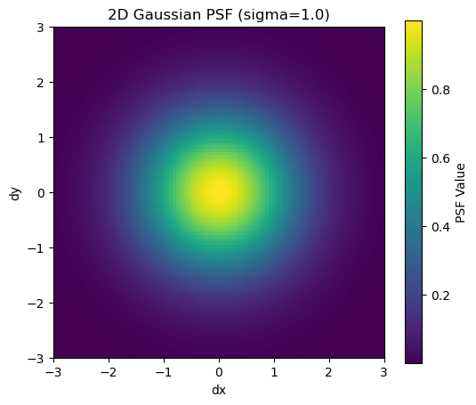
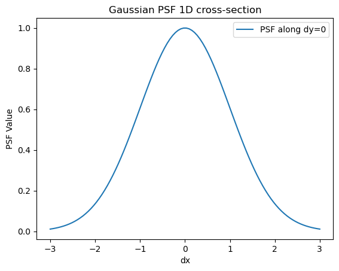
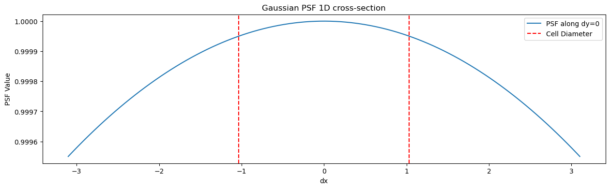
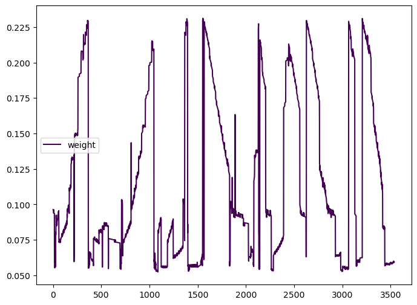
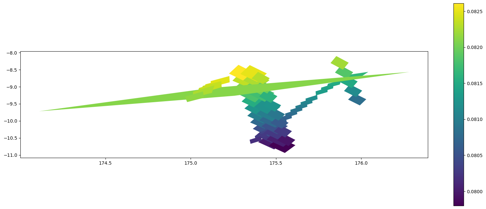
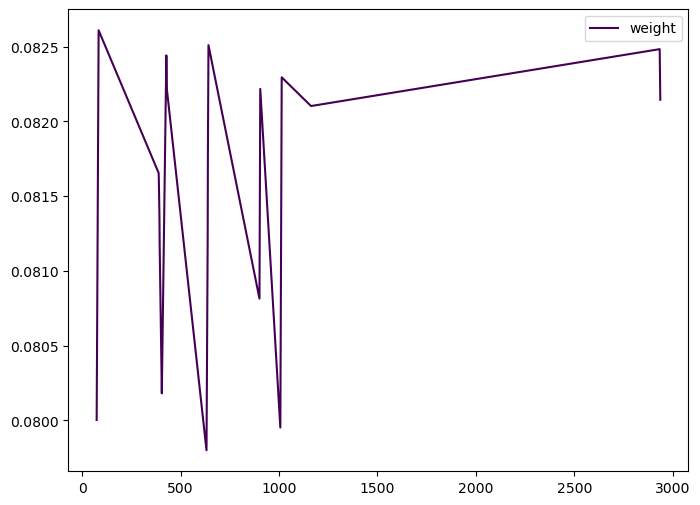
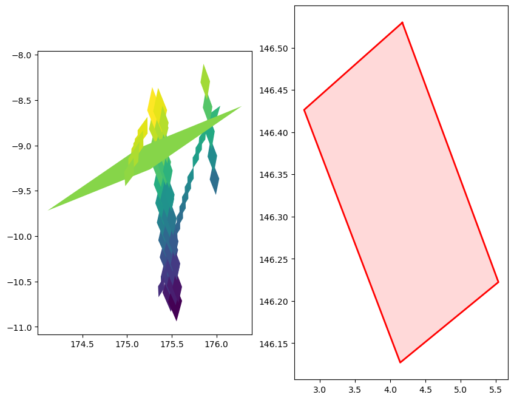

# Import the GaussianPSF class from healpyxel.sidecar
from healpyxel.sidecar import GaussianPSF
import numpy as np
import matplotlib.pyplot as pltVisualization Gaussian Point Spread Function
Complete visualization workflow: sidecar creation, aggregation, and map display
Import the healpyxel package and core utilities:
# Create a Gaussian PSF with a chosen sigma
sigma = 1.0
psf = GaussianPSF(sigma=sigma)
# Create a grid of (dx, dy) values
grid_size = 100
extent = 3 * sigma
x = np.linspace(-extent, extent, grid_size)
y = np.linspace(-extent, extent, grid_size)
dx, dy = np.meshgrid(x, y)
# Evaluate the PSF on the grid
z = psf(dx, dy)plt.figure(figsize=(6, 5))
plt.imshow(z, extent=[-extent, extent, -extent, extent], origin='lower', cmap='viridis')
plt.colorbar(label='PSF Value')
plt.title(f'2D Gaussian PSF (sigma={sigma})')
plt.xlabel('dx')
plt.ylabel('dy')
plt.show()
plt.figure()
plt.plot(x, psf(x, 0), label='PSF along dy=0')
plt.title('Gaussian PSF 1D cross-section')
plt.xlabel('dx')
plt.ylabel('PSF Value')
plt.legend()
plt.show()
from pathlib import Path
# Look for test data
test_data_dir = Path('../test_data')
if test_data_dir.exists():
print("Test data directory found!")
print(f"\nContents:")
for item in sorted(test_data_dir.iterdir()):
if item.is_file():
size_mb = item.stat().st_size / 1024 / 1024
print(f" {item.name}: {size_mb:.2f} MB")
elif item.is_dir():
n_files = len(list(item.glob('*')))
print(f" {item.name}/: {n_files} files")
else:
print("Test data directory not found. Run create_test_data.sh to generate test data.")Test data directory found!
Contents:
README.md: 0.00 MB
batches/: 10 files
regions/: 0 files
samples/: 3 files
validation/: 2 filesfrom healpyxel.sidecar import process_partition, write_coalesced_output, get_psf
import pandas as pd
from pathlib import Path
import geopandas as gpd
from shapely import wkb
# Load your test data
input_path = test_data_dir / 'batches' / 'batch_001.parquet'
# Read as regular pandas DataFrame first (geometry is stored as WKB binary)
df = pd.read_parquet(input_path)
print(f"Loaded {len(df)} rows")
print(f"Columns: {list(df.columns)}")
# Convert WKB geometry column to shapely geometries
if 'geometry' in df.columns:
print("\nConverting WKB geometry to GeoDataFrame...")
df['geometry'] = df['geometry'].apply(lambda x: wkb.loads(bytes(x)) if x is not None else None)
gdf = gpd.GeoDataFrame(df, geometry='geometry', crs='EPSG:4326')
print(f"CRS: {gdf.crs}")
else:
print("\nNo geometry column found!")
gdf = df
# Show first few rows
gdf.head(3)Loaded 3029 rows
Columns: ['ref_id', 'a', 'b', 'c', 'd', 'e', 'f', 'g', 'h', 'i', 'j', 'k', 'l', 'm', 'n', 'o', 'p', 'q1', 'q2', 'q3', 'q4', 'obs_id', 'vis_slope', 'nir_slope', 'visnir_slope', 'norm_vis_slope', 'norm_nir_slope', 'norm_visnir_slope', 'curvature', 'norm_curvature', 'uv_downturn', 'color_index_310_390', 'color_index_415_750', 'color_index_750_415', 'color_index_750_950', 'r310', 'r390', 'r750', 'r950', 'r1050', 'r1400', 'r415', 'r433_2', 'r479_9', 'r556_9', 'r628_8', 'r748_7', 'r828_4', 'r898_8', 'r996_2', 'spot_number', 'lat_center', 'lon_center', 'surface', 'width', 'length', 'ang_incidence', 'ang_emission', 'ang_phase', 'azimuth', 'geometry']
Converting WKB geometry to GeoDataFrame...
CRS: EPSG:4326| ref_id | a | b | c | d | e | f | g | h | i | ... | lat_center | lon_center | surface | width | length | ang_incidence | ang_emission | ang_phase | azimuth | geometry | |
|---|---|---|---|---|---|---|---|---|---|---|---|---|---|---|---|---|---|---|---|---|---|
| 0 | 0801419125400568 | 0 | 0 | 0 | 0 | 0 | 1 | 0 | 0 | 0 | ... | 1.069630 | 175.06512 | 54194396.0 | 5599.9224 | 12322.036 | 9.834717 | 73.333954 | 83.013830 | 154.51570 | POLYGON ((175.18568 1.15206, 175.0281 1.12375,... |
| 1 | 0801419125400569 | 0 | 0 | 0 | 0 | 0 | 1 | 0 | 0 | 0 | ... | 1.121209 | 175.14010 | 54753300.0 | 5660.6910 | 12315.469 | 9.769003 | 73.381120 | 82.985110 | 154.42958 | POLYGON ((175.25902 1.20378, 175.10211 1.17589... |
| 2 | 0801419125400570 | 0 | 0 | 0 | 0 | 0 | 1 | 0 | 0 | 0 | ... | 1.173109 | 175.21364 | 54823684.0 | 5736.7520 | 12167.806 | 9.704690 | 73.427300 | 82.956314 | 154.33447 | POLYGON ((175.32878 1.25573, 175.1742 1.22806,... |
3 rows × 61 columns
gdf['lon_center'].describe()count 3029.000000
mean 175.486985
std 0.295076
min 175.000180
25% 175.228490
50% 175.482590
75% 175.747380
max 175.999080
Name: lon_center, dtype: float64import numpy as np
def healpix_cell_diameter_deg(nside):
# Area of a HEALPix cell (steradians)
area_sr = 4 * np.pi / (12 * nside * nside)
# Convert to square degrees
area_deg2 = area_sr * (180/np.pi)**2
# Equivalent diameter (degrees) for a circle of this area
diameter_deg = 2 * np.sqrt(area_deg2 / np.pi)
return diameter_deg# Set parameters
nside = 32
mode = "fuzzy"
lon_convention = "0_360"
sigma_level = 0.01 # Number of sigma to cover the cell
cell_radius = healpix_cell_diameter_deg(nside) / 2
sigma = cell_radius / sigma_level
cell_psf = get_psf("gaussian", sigma=sigma) # You can adjust sigma as needed
print(f"{cell_radius=}")
print(f"{sigma_level=}")
print(f"{sigma=:}")cell_radius=np.float64(1.03374167891586)
sigma_level=0.01
sigma=103.374167891586plt.figure()
x = np.linspace(-3* cell_radius, 3*cell_radius, 200)
plt.figure(figsize=(15,4))
plt.plot(x, cell_psf(x, 0), label='PSF along dy=0')
# put vertical lines at +/- cell_diameter
plt.axvline(cell_diameter, color='r', linestyle='--', label='Cell Diameter ')
plt.axvline(-cell_diameter, color='r', linestyle='--')
plt.title('Gaussian PSF 1D cross-section')
plt.xlabel('dx')
plt.ylabel('PSF Value')
plt.legend()
plt.show()<Figure size 640x480 with 0 Axes>
processed_partition = process_partition(
gdf,
nside,
mode,
base_index=None,
lon_convention=lon_convention,
data_psf=None,
cell_psf=cell_psf
)
print(processed_partition.describe())2025-12-18 17:38:39,945 INFO Partition (lon_convention=0_360): processed 3029 geometries, dropped 2 (0.1%) total [pre-filter: 2, post-processing: 0] source_id healpix_id weight
count 3539.000000 3539.0 3539.000000
mean 1484.089008 5784.662617 0.116974
std 877.023929 2786.253912 0.056835
min 0.000000 1360.0 0.052385
25% 723.500000 1887.0 0.068813
50% 1467.000000 6381.0 0.092915
75% 2249.500000 7114.0 0.171715
max 3028.000000 9588.0 0.231170processed_partition['weight'].plot( cmap='viridis', figsize=(8,6), legend=True)
processed_partition.groupby('healpix_id').agg(len)[['weight']].sort_values(by='weight', ascending=False).head(10)| weight | |
|---|---|
| healpix_id | |
| 6742 | 197 |
| 6300 | 84 |
| 9495 | 80 |
| 1494 | 73 |
| 6294 | 72 |
| 6381 | 71 |
| 6394 | 70 |
| 6748 | 66 |
| 1372 | 63 |
| 6374 | 61 |
processed_partition.groupby('healpix_id').agg(sum)[['weight']].sort_values(by='weight', ascending=False).head(10)/tmp/ipykernel_3388075/3028256981.py:1: FutureWarning: The provided callable <built-in function sum> is currently using DataFrameGroupBy.sum. In a future version of pandas, the provided callable will be used directly. To keep current behavior pass the string "sum" instead.
processed_partition.groupby('healpix_id').agg(sum)[['weight']].sort_values(by='weight', ascending=False).head(10)| weight | |
|---|---|
| healpix_id | |
| 6742 | 18.155711 |
| 1494 | 14.655453 |
| 1404 | 11.186208 |
| 1372 | 10.915641 |
| 1887 | 10.366320 |
| 1879 | 10.354245 |
| 1398 | 9.979602 |
| 1909 | 9.568294 |
| 1500 | 9.174513 |
| 1492 | 8.849713 |
healpix_id = 6374
cell = processed_partition.query(f'healpix_id == {healpix_id}')
cell| source_id | healpix_id | weight | |
|---|---|---|---|
| 110 | 74 | 6374 | 0.080002 |
| 112 | 75 | 6374 | 0.080246 |
| 113 | 76 | 6374 | 0.080493 |
| 114 | 77 | 6374 | 0.080744 |
| 115 | 78 | 6374 | 0.081001 |
| ... | ... | ... | ... |
| 1395 | 1163 | 6374 | 0.082103 |
| 3434 | 2934 | 6374 | 0.082484 |
| 3436 | 2935 | 6374 | 0.082365 |
| 3438 | 2936 | 6374 | 0.082261 |
| 3439 | 2937 | 6374 | 0.082145 |
61 rows × 3 columns
import healpy as hp
lon, lat = 175, 43 # Example from your data
theta = np.radians(90 - lat)
phi = np.radians(lon)
hid = hp.ang2pix(nside, theta, phi, nest=True)
print(hid)
from healpyxel.sidecar import get_healpix_cell_geometry
# Return a shapely Polygon for the given HEALPix cell.
# Uses healpy boundaries (in degrees, lon/lat).
print(get_healpix_cell_geometry(hid, nside=nside,nest=False).exterior.xy)1372
(array('d', [-32.94412311703627, -33.52804087419743, -34.82172104878954, -34.23461408949813, -32.94412311703627]), array('d', [100.70419447584689, 102.7155086769465, 102.67406996768031, 100.66793719134546, 100.70419447584689]))gdf_cell = gdf.iloc[cell['source_id'].values].copy()gdf_cell['weight'] = cell.set_index('source_id')['weight']
fig, ax = plt.subplots(figsize=(20,8))
gdf_cell.plot(aspect=0.2, ax=ax, column='weight', legend=True)
gdf_cell['weight'].plot( cmap='viridis', figsize=(8,6), legend=True)
from sqlalchemy import column
fig, axs = plt.subplots(ncols=2, figsize=(10,8))
gdf_cell.plot(ax=axs[0], aspect='auto', column='weight')
poly = get_healpix_cell_geometry(healpix_id, nside=nside)
x_poly, y_poly = poly.exterior.xy
axs[1].plot(x_poly, y_poly, color='red', linewidth=2)
axs[1].fill(x_poly, y_poly, facecolor='red', alpha=0.15)